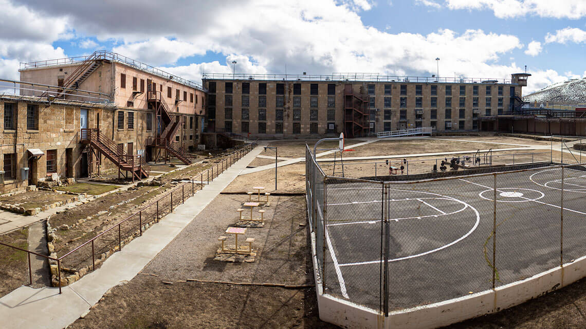
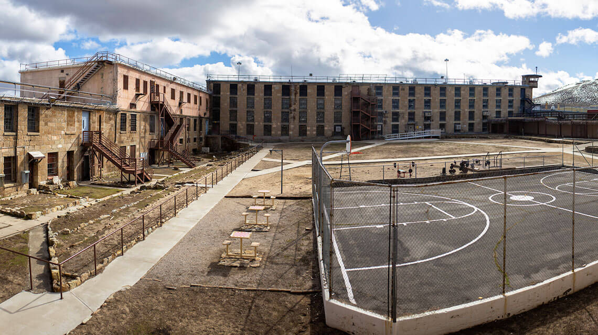

Nevada — AQSHning g‘arbiy qismida joylashgan, asosan cho‘l va tog‘li
hududlarga ega bo‘lgan shtat. U 1864-yil 31-oktabrda AQSHga 36-shtat
sifatida qo‘shilgan.
Geografik joylashuvi: G‘arbda California, sharqda Utah, shimolda Oregon va
Idaho, janubda Arizona bilan chegaradosh. Hududi asosan cho‘l va yarim
cho‘l, ammo ko‘plab tog‘ tizmalari mavjud.
Iqtisodiyoti: Nevada asosan turizm, qimor o‘yinlari, dam olish va
konchilik (xususan, oltin) sanoatlari bilan mashhur. Bu shtatda Las Vegas
— dunyoga mashhur kazino shahri joylashgan. Shuningdek, Reno shahri ham
dam olish va o‘yin-kulgi markazidir. Nevada — AQSHdagi eng katta oltin
ishlab chiqaruvchilardan biri.
Diqqatga sazovor joylari: Las Vegas Strip — mehmonxonalar, kazinolar,
shoular Hoover Dam — ulkan gidroelektr stansiya va diqqatga sazovor
inshoot Lake Tahoe — go‘zal ko‘l, chang‘i va yozgi dam olish uchun mashhur
Red Rock Canyon va Valley of Fire — tabiiy tosh shakllari va rangli
landshaftlar
Madaniyat: Nevada o‘zining erkin qonunlari va ko‘ngilochar sanoati bilan
mashhur. Las Vegas — global konsertlar, musiqiy shoular va xalqaro sport
musobaqalari markazi.
 
